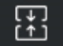

<div class='container'>
        <div class='main-content row'>
            <div class='mainbar col-md-12 col-sm-12 col-xs-12'>
                <ol class=" breadcrumb " style="background: #fff;">
                    <span class="glyphicon glyphicon-home"></span>
                    <a href="/" style="color: #000;">首页</a>>
                    <a href="" style="color: #000;">博文</a>

                </ol>
            </div>
            <div class='mainbar col-md-9 col-sm-12 col-xs-12'>
                    {% assign count = 1 %}
                {% for post in site.posts reversed %}
                    {% assign year = post.date | date: '%Y' %}
                    {% assign nyear = post.next.date | date: '%Y' %}
                
                    {% if year != nyear %}
                            {% assign count = count | append: ', ' %}
                            {% assign counts1 = counts1 | append: count %}
                            {% assign count = 1 %}
                    {% else %}
                            {% assign count = count | plus: 1 %}
                    {% endif %}
                {% endfor %}

                {% assign counts1 = counts1 | split: ', ' | reverse %}
                {% assign i = 0 %}
        
                {% assign color =1.1 %}
                {% for post in site.posts  %}
                
                    {% assign year =post.date | date: '%Y' %}
                    {% assign nyear = post.next.date | date: '%Y'  %}
                    {% if year !=nyear %}
                    {% assign color=color | minus: 0.1 %}
                    <a name="yearname{{post.date| date: '%Y'}}" ></a>
                    
                <div    class="col-sm-12 col-xs-12  " style=" margin-bottom: 10px;border:1px solid #E0E0E0;background-color:#fff;padding-left: 0px;padding-right: 0px;" >
                    <div  class="col-sm-12 col-xs-12  " onclick="click_year({{post.date| date: '%Y'}})" style="height: 60px;background: #24292c; text-align:center;line-height: 60px;opacity: {{color}} ">
                        
                    
                                <font style="color: #fff;" class="new_year" >
                               
                               {{post.date| date: '%Y'}}年度
                                     
                                </font>
                                <span  style="color: #fff;">
                                   (共计{{counts1[i]}}篇）
                                </span>
                               
                    </div>
                    <div class="col-sm-12 col-xs-12" id="menu_year_{{post.date| date: '%Y'}}" >
                    </div>
                </div> 
                

        {% assign i=i | plus: 1 %}
        {% endif %}

        
   
            {% endfor %}
                    
                  

                
            </div><!--end of mainbar-->
            <div class='sidebar col-md-3 hidden-sm hidden-xs'>
                <div class='authorslistbar panel panel-default' id='authorslistbar'>
                    <div class='panel-heading' style="height: 60px;line-height: 40px;">
                        <span class="glyphicon glyphicon-list-alt"></span>
                        <font style="font-weight: bold; color: #24292c;" >年份</font>
                    </div>
                      
                    <div class='list-group'>
        {% assign count = 1 %}
        {% for post in site.posts reversed %}
            {% assign year = post.date | date: '%Y' %}
            {% assign nyear = post.next.date | date: '%Y' %}
        
            {% if year != nyear %}
                    {% assign count = count | append: ', ' %}
                    {% assign counts = counts | append: count %}
                    {% assign count = 1 %}
            {% else %}
                    {% assign count = count | plus: 1 %}
            {% endif %}
        {% endfor %}

        {% assign counts = counts | split: ', ' | reverse %}
        {% assign i = 0 %}
        
        
        
        


        
        {% for post in site.posts  %}
        
            {% assign year =post.date | date: '%Y' %}
            {% assign nyear = post.next.date | date: '%Y'  %}
            {% if year !=nyear %}
            
            
       <div style="border:1px solid #E0E0E0;height: 50px;line-height: 50px; background:#f3f3f3;">
            <div class="col-sm-9"  >
                <a   href="#yearname{{post.date| date: '%Y'}}" value="{{post.date| date: '%Y'}}" style="line-height: 40px;">
                    <font style="color: #24292c;">
                        {{post.date| date: '%Y'}}
                    </font>
                </a>
            </div>
            <div class="col-sm-3 pull-right" style="line-height: 40px;">
                <span class="badge" style="margin-top: 16px;" >
                    {{counts[i]}}
                </span>
            </div>
        
        </div>

        {% assign i=i | plus: 1 %}
        {% endif %}

        
   
    {% endfor %}
        
        
    </div>


                </div><!--end of authorslistbar-->
            </div><!--end of sidebar-->
        </div><!--end of main-content-->
    </div><!--end of container-->